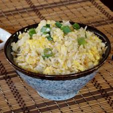

Breakfast Rice from Japan

Description
This recipe is quick, plain, moist, slightly sticky, and has a subtle sweetness to it. Its also delicious.
Prep Time: 10 mins Cook Time: 5 mins Total Time: 15 mins Servings: 1
Ingredients
- 1 teaspoon vegetable
- 1 cup cold cooked rice, or more to taste
- 1 egg, or more to taste
- 2 green onions, sliced, or more to taste
- 2 teaspoons soy sauce, or to taste
Steps
- Heat oil in a large skillet over medium-high heat. Spread rice in a flat layer in hot oil; cook until crispy on the bottom, 2 to 3 minutes.
- Stir egg into rice until scrambled, about 2 minutes more. Sprinkle green onions on top and season with soy sauce.
Home